在平面内输出和绘制各种性质¶
Multiwfn manual, p.512–540.英文原文见同名 English 章节。 Images:
../imgs/.
两个双占据MO的能量分别为-25.03和-24.91 eV，都低于该势垒，因此每个He原子中的电子很难（但由于隧穿效应，并非完全不可能）越过势垒自由离域到另一个He。He-He相互作用因此应视为非共价相互作用。
注意，在PAEM-MO的原始论文中，PAEM是基于昂贵的CISD波函数计算的，而我们仅使用了HF波函数。然而，我们的结果与CISD水平的结果符合得很好，表明在PAEM研究中相关势可以安全地忽略。
建议感兴趣的用户用iuserfunc=34重新绘制PAEM，以在PAEM中采用DFT XC势，你会发现结果与我们之前得到的非常相似。
值得注意的是，尽管PAEM-MO分析方法具有明确的物理意义，但其许多局限性严重阻碍了它成为像ELF或LOL那样区分共价与非共价相互作用的通用方法：(1) PAEM-MO分析并非在所有情况下都给出合理结论。例如，PAEM-MO错误地表明水二聚体中的氢键是共价相互作用。(2) PAEM-MO难以应用于多原子分子，因为其中往往有太多形状复杂的占据轨道。(3) 如果两个原子靠得太近，则PAEM-MO几乎总是表明该相互作用是共价的。
4.4 在平面内输出和绘制各种性质¶
Multiwfn的主功能4用于绘制实空间函数的各种平面图。该模块极为灵活，显然不可能通过有限的例子展示该功能的所有可能用法；但是，如果你认真跟随这些例子并尝试重现图形，你将获得关于使用Multiwfn绘制平面图足够的基础知识。强烈建议阅读第3.5节，其中介绍了绘制平面图的许多要点。
视频https://youtu.be/E7lAGac3aDM值得一看，其中演示了重现Multiwfn标志（Li6团簇的ELF图）的全过程。该视频还展示了如何使图的背景透明。
4.4.1 颜色填充图和等值线图的绘制示例¶
4.4.1.1 绘制氰化氢的电子密度¶
在本例中，我们将氰化氢的电子密度绘制为颜色填充图和等值线图。启动Multiwfn并输入以下命令
Multiwfn 交互
- examples\HCN.wfn 4 — 在平面内绘制图形（Plot graph in a plane）
- 1 — 电子密度（Electron density）
- 1 — 颜色填充图（Color-filled map） [直接按ENTER键（Press ENTER button directly）]
2 // XZ平面（当前体系的分子轴为Z轴，你可通过主功能0确认）(XZ plane (Z-axis is the molecular axis of present system, you can confirm this via main function 0))
几秒钟后图形弹出
碳和氮的中心区域为白色，表明电子密度超过了颜色标尺的上限(0.65)。关闭图形，然后会出现一个后处理菜单，其中有许多选项，其含义非常容易理解。你可以选择相应选项调整绘图参数，然后用选项-1重新绘制，或将X-Y数据集导出为纯文本文件，以便随后用外部软件（Sigmaplot、Origin、Matlab等）绘图，或将图像文件保存在当前目录下（图形格式由settings.ini中的"graphformat"控制）。
现在我们对上图稍作改进。输入以下命令：-8 // 将图形的长度单位改为Å(Change length unit of the graph to Å)
Multiwfn 交互
- -2 — 设置X、Y和颜色标尺轴的标签间隔(Set label interval in X, Y and color scale axes) 1,1,0.1
- 4 — 显示原子标签（Enable showing atom labels）
- 1 — 红色标签（Red labels）
- 8 — 显示化学键（Enable showing bonds）
- 3 — 化学键用蓝色（Blue color for bonds）
- -1 — 重新绘制图形（Redraw the graph） 现在你可以在屏幕上看到如下图
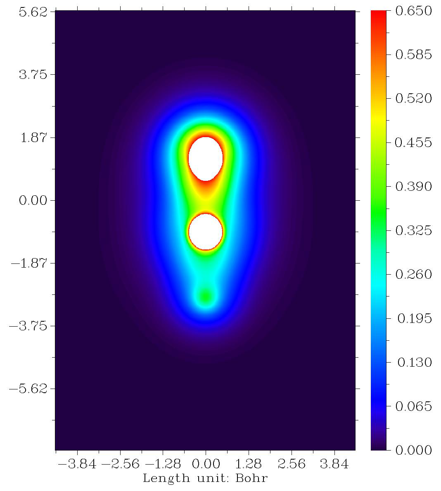
在第4.6.2节中，我们将绘制HCN的价电子密度，你会发现价电子密度比总电子密度传达了更多的信息。
接下来，我们将电子密度绘制为等值线图。重复上面的例子，但选择"2 等值线图（Contour line map）"而不是"1 颜色填充图（Color-filled map）"，你将看到下图
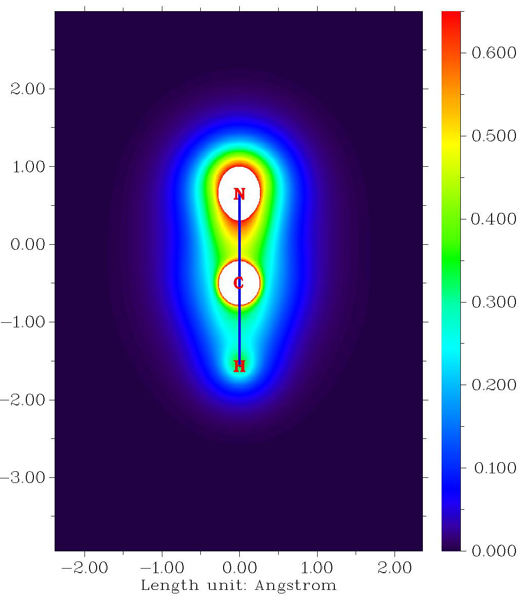
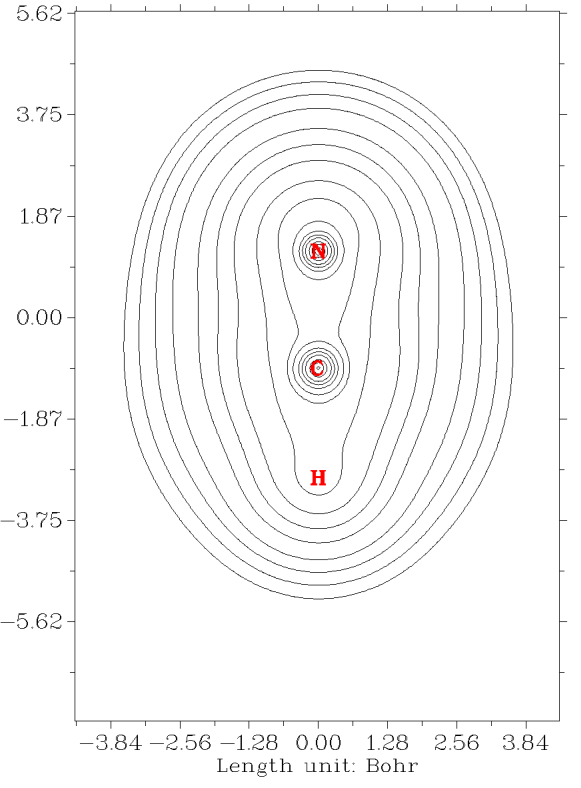
后处理菜单中有许多选项。如果选择选项2，等值线值将标注在相应的等值线上。一旦选择选项3，你将进入设置等值线的界面，颜色、粗细、等值线数值等各种参数都可以方便地自定义，请尝试操作一下；如果你感到困惑，请参阅第3.5.4节了解更多细节。
值得注意的是，.pdf格式比默认的.png格式更适合等值线图（以及其它主要由线条组成的图），因为.pdf是矢量格式，图形可以无损缩放，线条看起来更平滑。为了改为.pdf格式，你应将settings.ini中的"graphformat"改为pdf。
4.4.1.2 绘制FOX-7的定域轨道指示函数（LOL）¶
在本例中，我们为一种含能化合物FOX-7绘制定域轨道指示函数（LOL）。LOL是揭示电子定域特征的常用函数，见第2.6节介绍。它与另一个非常流行的函数——电子定域函数（ELF）具有类似特征。本节的输入文件是examples\FOX-7.wfn，如果你将其载入Multiwfn并进入主功能0，你将看到以下结构。我们将绘制由原子N9、C2、N12定义的平面。
Multiwfn 交互
- 启动Multiwfn并输入examples\FOX-7.wfn 4 — 绘制平面图（Plot plane map）
- 10 — 定域轨道指示函数（LOL）(Localized orbital locator (LOL))
- 1 — 颜色填充图（Color-filled map） [直接按ENTER键（Press ENTER button directly）]
- 4 — 通过三个原子定义平面（Define the plane by three atoms）
- 9,2,12 — 使用这三个原子的核位置定义平面（Use nuclear position of the three atoms to define the plane） 直接显示在屏幕上的图形不易研究。因此，我们关闭图形，然后输入以下命令
Multiwfn 交互
- 8 — 显示化学键（Enable showing bonds）
- 14 — 棕色（Brown color）
- 4 — 显示原子标签（Enable showing atom labels）
- 1 — 红色（Red color）
- 18 — 改变原子标签样式（Change style of atomic labels）
- 3 — 同时绘制元素符号和原子序号（Plot both element symbol and atomic index）
- -1 — 再次显示图形（Show the graph again） 我们将看到下图
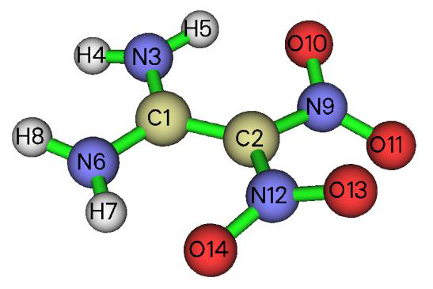
你可以发现，许多原子的标签没有显示在图上，这是因为这些原子到绘图平面的垂直距离大于settings.ini中的"disshowlabel"参数。如果我们想在图上显示所有原子标签，应关闭图形并输入以下命令：
Multiwfn 交互
- 17 — 设置显示原子标签的距离阈值（Set distance threshold for showing atom labels）
- 10 — 将阈值放大到10 Bohr(Enlarge the threshold to 10 Bohr) y
-1 // 再次绘制图形以查看效果（Plot the map again to check effect） 你将看到下图，仅给出感兴趣的部分
如图所示，所有原子的标签都已显示，相应的化学键也已显示。在该图中，红色很大程度上揭示了成键中
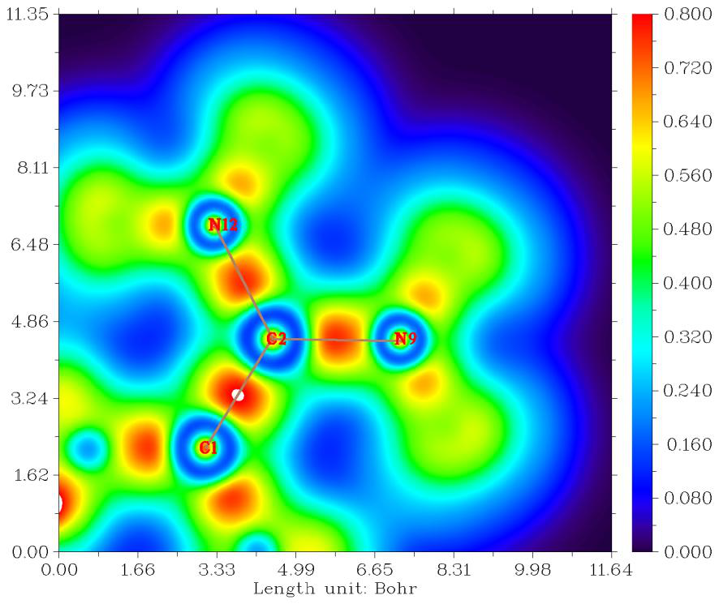
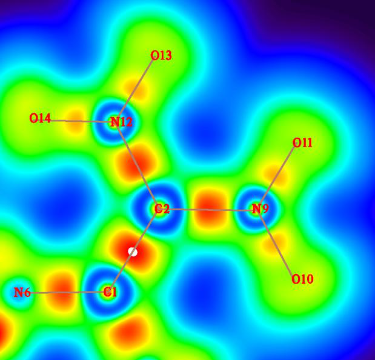
区域的高电子定域特征。N与O之间的电子定域程度不如C-N和C-C键的情形高，这是"电荷移键（charge-shift bond）"的已知特征，关于此点的更多信息见Chem. Eur. J., 11, 6358 (2005)。
默认的颜色过渡方式是"彩虹（Rainbow）"，在函数值低于和高于颜色标尺的区域分别为白色和黑色。着色方式可由用户改变。作为示例，在后处理菜单中我们输入
Multiwfn 交互
- 19 — 设置颜色过渡（Set color transition）
- 17 — 黑-蓝-青（Black-Blue-Cyan）
- 1 — 设置颜色标尺的下限和上限(Set lower&upper limit of color scale)
- 0,0.7 — 将上限从默认值降至0.7，以便颜色能更好地分辨不同区域的ELF(Decrease the upper limit from default value to 0.7 to make color able to better distinguish ELF in different regions)
-1 // 重新绘制（Replot） 下图看起来非常酷 ;-D
等值线可以叠加到颜色填充图上。为了制作漂亮的带等值线的颜色填充图，我们输入以下命令
Multiwfn 交互
- 19 — 设置颜色过渡（Set color transition）
- 8 — 蓝-白-红（Blue-White-Red）
- 2 — 显示等值线（Enable showing contour lines）
- 1 — 设置颜色标尺的下限和上限(Set lower&upper limit of color scale) 0,1
- -2 — 设置X、Y和颜色标尺轴的标签间隔(Set label interval in X, Y and color scale axes) 2,2,0.1
- -1 — 重新绘制（Replot） 当前图形如下所示，相当令人满意
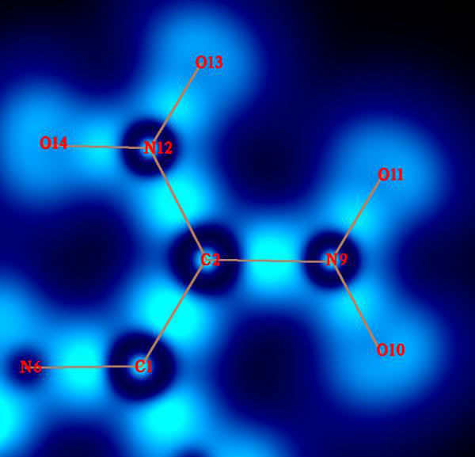
顺便提一下，如果你想在图形中平移或旋转所绘制的对象，在定义绘图平面的界面中，在选择选项4或5之前，应先选择选项"-1：设置平面类型4和5的图的平移和旋转（Set translation and rotation of the map for plane types 4 and 5）"，然后输入平移值和旋转角度，详见第3.5.2节。
4.4.2 单氟乙烷的电子定域¶
函数（ELF）的阴影浮雕投影图¶
本节说明如何绘制带投影效果的阴影浮雕图。启动Multiwfn并输入以下命令
examples\C2H5F.wfn 0 // 首先查看分子结构以找到我们感兴趣的平面（View the molecular structure first to find the plane we are interested in）。假设C-C-F平面是我们想要绘制的，记录原子序号(1, 5, 8)，然后点击RETURN键返回主菜单
Multiwfn 交互
- 4 — 在平面内绘制图形（Plot graph in a plane）
- 9 — 电子定域函数（ELF）(Electron localization function (ELF))
- 5 — 带投影效果的阴影浮雕图（Shaded relief map with projection effect） [按ENTER键（Press ENTER button）]
手动设置外延距离（Manually set extension distance）。如果你不这样做，你会发现所得图形在边界处有些被截断，因为默认外延距离对当前情形太小
Multiwfn 交互
- 6 — 将外延距离设为6 Bohr，略大于默认值(Set extension distance to 6 Bohr, which is slightly larger than the default value)
- 4 — 通过三个原子定义绘图平面（Define the plotting plane by three atoms）
- 1,5,8 — 这三个原子的序号（Indices of the three atoms） 下图立即弹出：
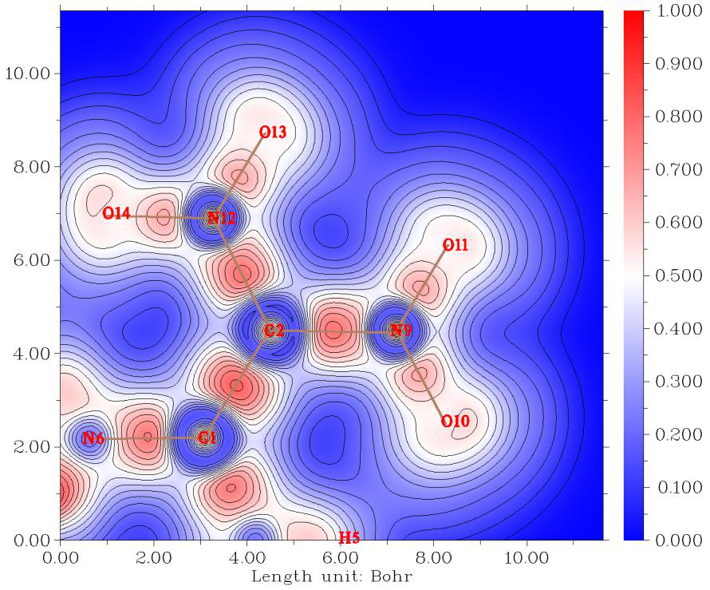
我们可以看到，C-C和C-F共价键区域具有高LOL值，呈现出这些地方高度的电子定域。重原子价层与内层之间极低的电子定域区由每个核周围的蓝色环状区域揭示。氟原子的孤对区域由紫色箭头指出。
在GUI中看到的图形可通过后处理界面中的选项0保存为图形文件。如果你发现导出的图像中对象在边缘处被截断，应选择选项-1重新进入GUI窗口，将图形缩小后再导出图片。
4.4.3 绘制不含某些原子贡献的平面图¶
本节的主要目的是说明如何绘制不含某些原子贡献的实空间函数的平面图。在Multiwfn中可通过两种不同方式实现该目的，如下面两个例子分别所示。
例1：不含两个原子贡献的尿嘧啶电子密度Laplacian等值线图
在主功能6中，可使用子功能-3和-4删除以某些原子为中心的Gauss型函数（GTF），从而去除它们对各种基于实空间函数的分析的贡献。本例将利用该特性。由于这种处理减少了GTF总数，后续分析的计算代价将降低。
Multiwfn 交互
- 启动Multiwfn并输入以下内容examples\uracil.wfn 6 — 修改波函数（Modify wavefunction）
- -4 — 舍弃某些原子的贡献（Discard contribution of some atoms）
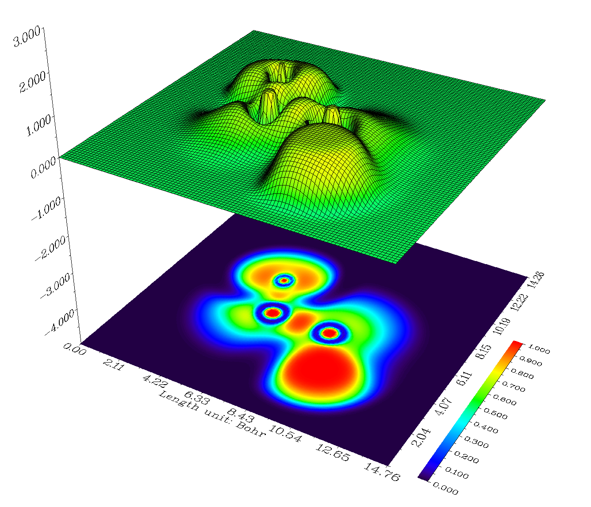
3,4 // 将舍弃以原子3和4为中心的所有GTF。换句话说，将从当前波函数中去除原子3和4的贡献(All GTFs centered on atoms 3 and 4 will be discarded. In other words, contribution of atoms 3 and 4 will be removed from current wavefunction)
Multiwfn 交互
- -1 — 返回主菜单（Return to main menu）
- 4 — 在平面内绘制图形（Plot graph in a plane）
- 3 — Laplacian函数（Laplacian function）
- 2 — 等值线图（Contour line map） [按ENTER键使用默认格点设置（Press ENTER button to use default grid setting）]
- 1 — 将绘制XY平面（XY plane will be plotted）
- 0 — XY平面的Z位置为零，即分子平面(The Z-position of the XY plane is zero, that is molecular plane) 下面是所得图形，实线和虚线分别对应正值和负值区域。
从图中可以看到，正如我们预期的那样，两个碳的贡献已被舍弃。
顺便说一下，如果你正在研究大体系，但只对局域区域感兴趣，可以去除远离该区域的原子上的GTF，以节省实空间函数分析（如拓扑分析、盆分析、计算格点数据……）的计算时间。
例2：仅由尿嘧啶环上原子贡献的LOL平面图 像通常一样绘制平面图后，可以要求程序仅绘制由某个片段贡献的图。具体而言，将生成用户定义片段的Hirshfeld权重函数并乘到平面数据上。这种处理只影响当前绘制的图，而不影响任何进一步的分析，因为这种处理并不修改波函数。
这里我们用该特性绘制仅由环上六个原子贡献的尿嘧啶的定域轨道指示函数（LOL）图。启动Multiwfn并输入以下命令：
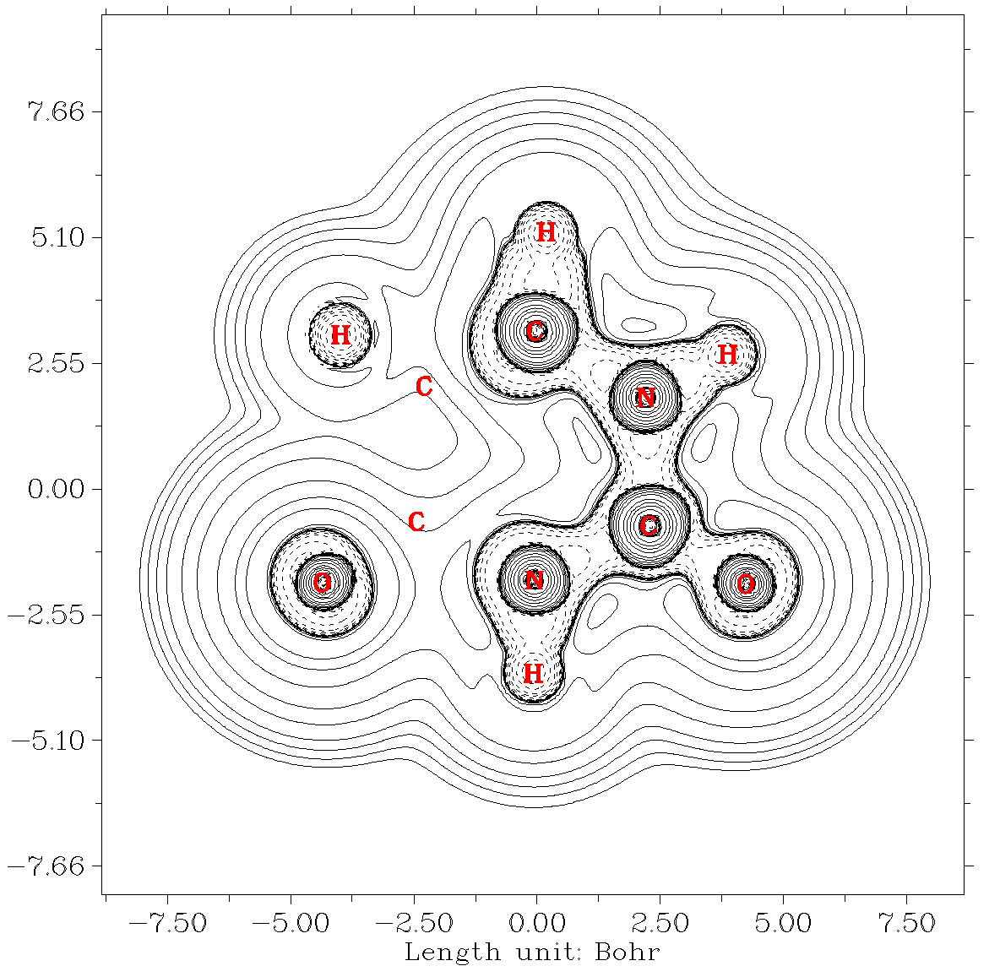
Multiwfn 交互
- examples\uracil.wfn 4 — 平面图（Plane map）
- 10 — LOL 1
将绘制XY平面（XY plane will be plotted）
Multiwfn 交互
- 0 — Z=0 关闭图形，然后输入
- -9 — 仅绘制某些原子周围的数据（Only plot the data around certain atoms）
- 1-6 — 尿嘧啶环上六个原子的序号（The index of the six atoms in the uracil ring）
- 8 — 显示化学键（Enable showing bonds）
- 14 — 棕色（Brown）
- -1 — 重新绘制（Replot）
然后你将看到
显然，远离环原子的格点处的LOL值已被显著屏蔽。然后如果你想恢复原始图，可以在后处理菜单中选择"-9 恢复原始平面数据（Recovery original plane data）"然后重新绘制。
4.4.4 三氟化氯静电势的等值线图¶
在本例中，我们将三氟化氯的静电势（ESP）绘制为等值线图。启动Multiwfn并输入以下命令
Multiwfn 交互
- examples\ClF3.wfn — 在B3LYP/6-31G水平下产生(Generated at B3LYP/6-31G level)
- 4 — 在平面内绘制图形（Plot graph in a plane）
- 12 — 总静电势（Total electrostatic potential）
- 2 — 绘制等值线图（Draw contour line map）
- 120,120 — 每个方向的格点数（Number of grids in each direction）
- 3 — YZ平面（YZ plane）
- 0 — 将YZ平面的X坐标设为0(Set X coordinate of the YZ plane to 0)
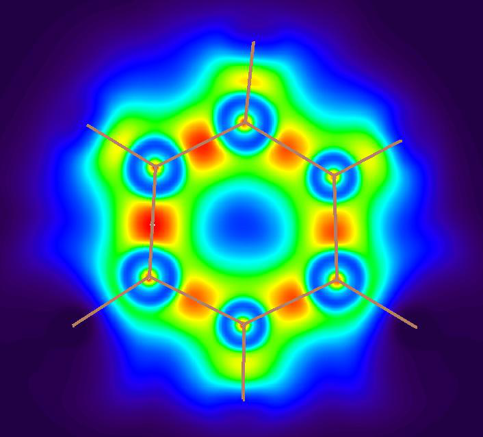
由于静电势（ESP）的计算显然比其它实空间函数更耗时，你需要等待一段时间。
计算完成后，会弹出 ESP 平面图。这张图不便于直观分析，因为我们感兴趣的往往是分子范德华表面上的 ESP 值，因此最好同时在这张图上绘制范德华表面。要做到这一点，可点击鼠标右键关闭图形，在后处理菜单（post-processing menu）中选择选项 15，然后选择选项 -1 重新绘制图形，你将看到如下图片。实线和虚线分别代表 ESP 取正值和负值的区域。
粗蓝色线对应范德华表面（电子密度为 0.001 a.u. 的等值面，由 R. F. W. Bader 定义）。从图中可以清楚地看出，氯原子整体带正电，因为靠近氯原子的范德华表面大都与实线等值线相交。出于同样的原因，我们可以看到，平伏氟原子（equatorial fluorine atom）比两个轴向氟原子拥有更少的电子，这一点将在 4.7.1 节计算该分子的原子电荷时得到进一步验证。
由原子电荷导出的 ESP 平面图也可以直接用 Multiwfn 绘制。首先，你需要准备一个扩展名为 .chg 的纯文本文件，第一列对应元素名，第 2、3、4 列分别对应以 Å 为单位的 X、Y、Z 坐标，最后一列为原子电荷。例如：
Cl 0.000000 0.000000 0.359408 0.529971
F 0.000000 1.726507 0.294501 -0.228394
F 0.000000 0.000000 -1.267884 -0.073185
F 0.000000 -1.726507 0.294501 -0.228394
像往常一样启动 Multiwfn，然后使用该 .chg 文件作为输入。绘图过程与上文完全相同，只是当 Multiwfn 提示你选择实空间函数时，你应选择 8（由原子电荷导出的 ESP）而不是 12。
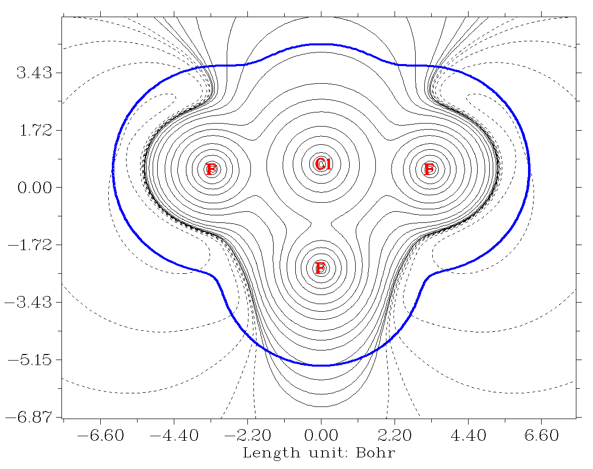
4.4.5 两个轨道波函数的等值线图¶
Multiwfn 能够同时绘制两个轨道的等值线图。在本节中，我们将同时绘制 NH2COH 的 NBO 12 和 NBO 56 的等值线图（回顾 4.0.2 节）。我们选择的平面是垂直于分子平面且同时经过碳原子和氮原子的平面。如你将看到的，我们需要用一种特殊方式来定义这样的绘图平面。分子几何结构和原子编号如下所示。
Multiwfn 交互
- 启动 Multiwfn 并输入：examples\NH2COH.31 37 — 载入 NH2COH.37
- 4 — 绘制平面图 4
两个轨道的编号。如果你只输入一个编号，则只绘制一个轨道
[按回车键（ENTER）使用默认格点设置]
Multiwfn 交互
- 7 — 该模式用于定义平行于一条键且同时垂直于由三个原子所定义平面的绘图平面
Multiwfn 交互
- 1,4 — 绘图平面平行于 C1-N4
- 3,1,4 — 绘图平面垂直于由 O3-C1-N4 定义的平面
- 10 — 所得图形 X 轴长度为 10 Bohr
- 10 — 所得图形 Y 轴长度为 10 Bohr 图形会立即弹出。我们点击鼠标右键关闭它，选择选项 2 并输入 25，以在等值线上显示数值，然后选择 -1 重新绘制图形，我们将看到：
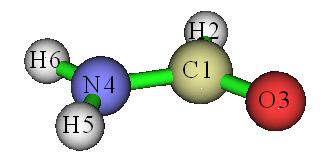
这张等值线图还不太理想，有太多等值线交织在一起，从而干扰了我们的视线。罪魁祸首是等值过小（绝对值小于 0.01）的等值线。由于这些等值线不重要，我们可以删除它们以使图形更清晰。因此，我们关闭图形并输入
Multiwfn 交互
- 3 — 修改等值线设置
- 4 — 删除部分等值线
- 1-4 — 删除等值线 1~4，它们分别对应 0.001、0.002、0.004、0.008
- 4 — 删除部分等值线
- 28-31 — 删除对应于 -0.001、-0.002、-0.004、-0.008 的四条等值线
为方便起见，你可以选择选项 6 将当前等值线设置导出到外部文件，下次使用 Multiwfn 时可直接在当前界面选择选项 7 载入当前设置
15 // 设置适合发表的绘图风格，即正值和负值部分分别绘制为红色实线和蓝色虚线
Multiwfn 交互
- 1 — 保存设置并返回上一级菜单
- -8 — 将图形的长度单位改为 Å
- -2 — 设置 X 轴和 Y 轴的标签间隔
- 1,1 — X 轴和 Y 轴的间隔均为 1.0 Å
- -1 — 重新绘制等值线图 2
使用 30 号字体的标签 现在图形变得非常清晰且信息丰富，同相重叠区域非常明显。
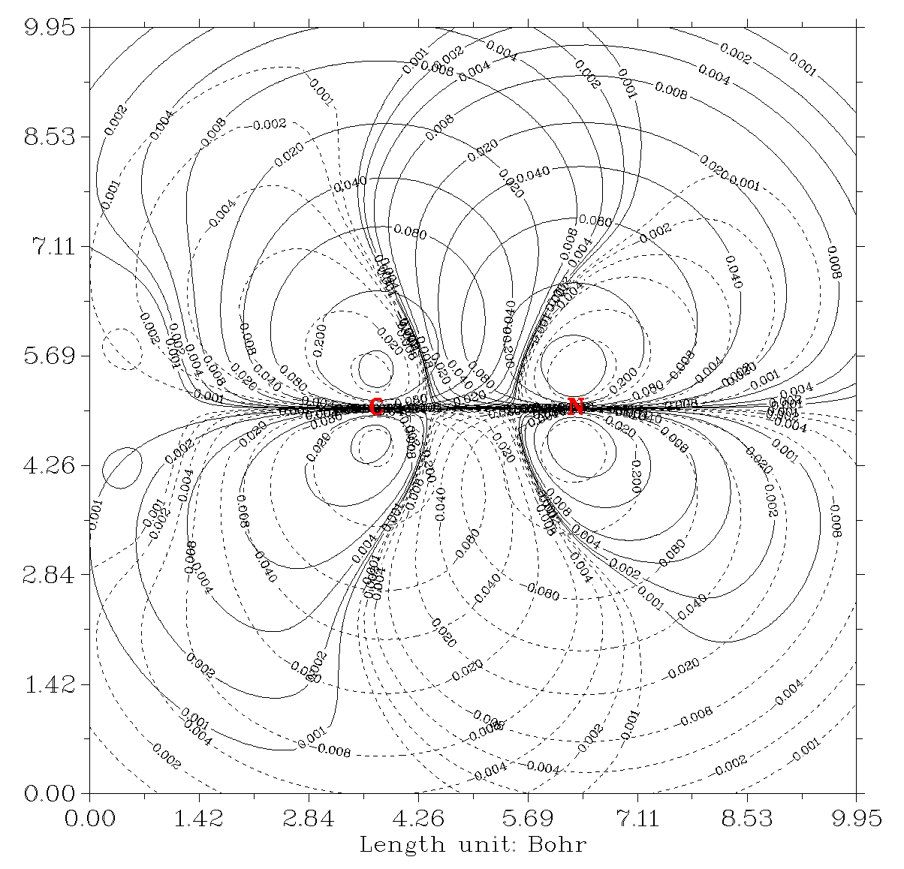
4.4.6 过氧化氢的电子密度梯度＋等值线图及拓扑路径¶
（Gradient + contour map with topology paths）¶
如 3.5.5 节所述，临界点、键路径和盆间表面也可以绘制在平面图上，这里我给出一个简单例子。绘制这类图形有相应的视频说明 https://youtu.be/gv5FkiFWUY0，建议观看。
电子密度的梯度图 首先，我展示如何为过氧化氢绘制常规的电子密度梯度图。启动 Multiwfn 并输入以下命令
examples\H2O2.fch // 当然，你也可以使用其它类型的文件作为输入，只要该文件包含 GTF 信息即可
Multiwfn 交互
- 4 — 绘制平面图
- 1 — 电子密度
- 6 — 梯度线＋等值线图 [按回车键（ENTER）使用默认格点设置]
- 4 — 使用三个原子定义绘图平面
- 2,1,3 — 用原子 2、1 和 3 的核位置定义平面
生成数据并绘制梯度图比其它图形类型需要更多的计算时间，不过由于当前体系很小且基组只有 6-31G*，所得图形会立即显示：
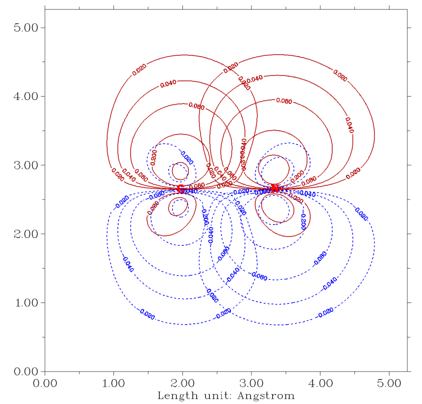
这类图形在 Bader 的 AIM 分析中非常有用。你也可以为 Multiwfn 支持的任何其它实空间函数绘制梯度＋等值线图。在后处理菜单（post-processing menu）中，你可以使用选项 11、12、13 和 14 调整梯度线的绘图效果，它们可分别控制梯度线的平滑度、密度、颜色和密度。
带键路径和电子密度临界点的电子密度梯度图 如果你希望图形上同时绘制临界点和路径，需要先按 4.2.1 节所述进行拓扑分析，然后再绘制平面图。现在我们输入以下命令
Multiwfn 交互
- -5 — 返回主菜单（main menu）
- 2 — 拓扑分析（默认分析电子密度）
- 2 — 从核位置搜索临界点（CPs）
- 3 — 从原子对中点搜索临界点
- 8 — 生成连接 (3,-3) 和 (3,-1) 临界点的路径，即在当前语境下生成键路径
Multiwfn 交互
- 0 — 直观检查是否已生成所有预期的临界点和路径。此步可选
- -10 — 返回主菜单（main menu） 然后按上述方式绘制电子密度的梯度线图。所得图形应如下所示。棕色、蓝色和橙色圆圈分别表示 (3,-3)、(3,-1) 和 (3,+1) 临界点，粗深棕色线表示键路径。
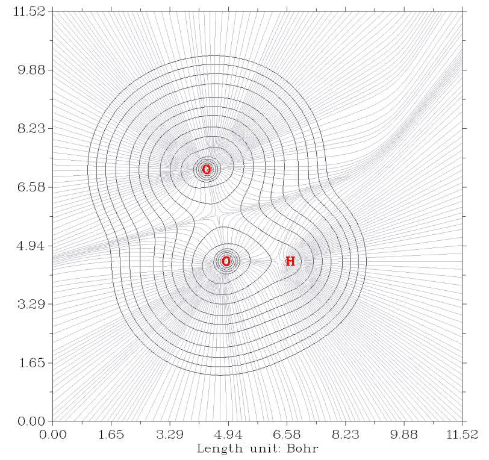
在后处理菜单（post-processing menu）中，你可以进入“4 设置临界点和路径的绘制细节（Set details of plotting critical points and paths）”来调整临界点和路径的显示设置。
提示：不同类型临界点的颜色可通过 settings.ini 文件中的 "CP_RGB_2D" 设置。
盆间路径（Interbasin paths）也可以绘制在图形上。如果你已在拓扑分析模块中完成临界点搜索，在绘制等值线/梯度/矢量场图后，可在后处理阶段找到名为“生成并显示盆间路径（Generate and show interbasin paths）”的选项；选中它并重新绘制图形，盆间路径将以粗深蓝色线显示在图形上：
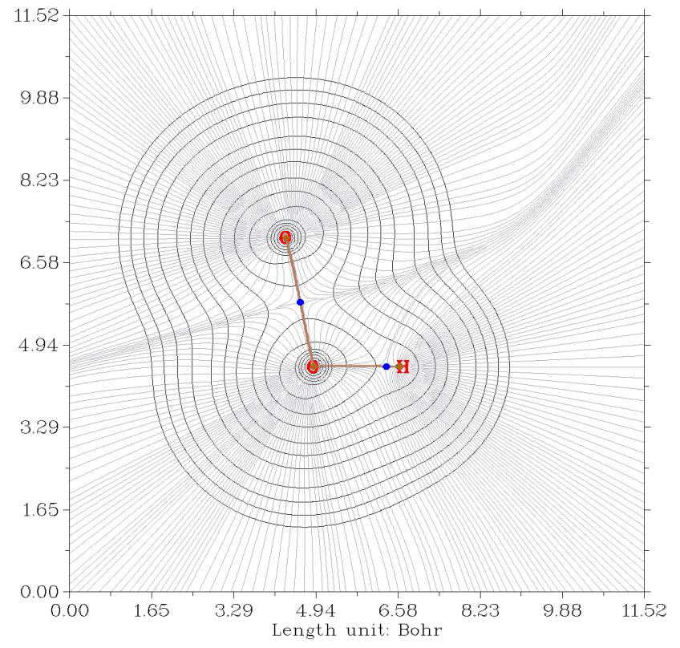
注意，在生成盆间路径之前，可通过后处理菜单（post-processing menu）中的选项“7 设置盆间路径生成的步长和最大迭代数（Set stepsize and maximal iteration for interbasin path generation）”设置相关参数（步长和迭代数）。更大的迭代数可能导致更长的盆间路径。
带电子密度键路径和临界点的电子密度 Laplacian 等值线图
最后，我们绘制电子密度 Laplacian 的等值线图，其上同时显示之前生成的键路径和临界点。返回主菜单（main menu）然后输入以下命令
Multiwfn 交互
- 4 — 绘制平面图
- 3 — 电子密度的 Laplacian
- 2 — 等值线图 [按回车键（ENTER）使用默认格点设置]
- 4 — 使用三个原子定义绘图平面
- 2,1,3 — 用原子 2、1 和 3 的核坐标定义平面
所得图形如下所示（仅给出局部区域）
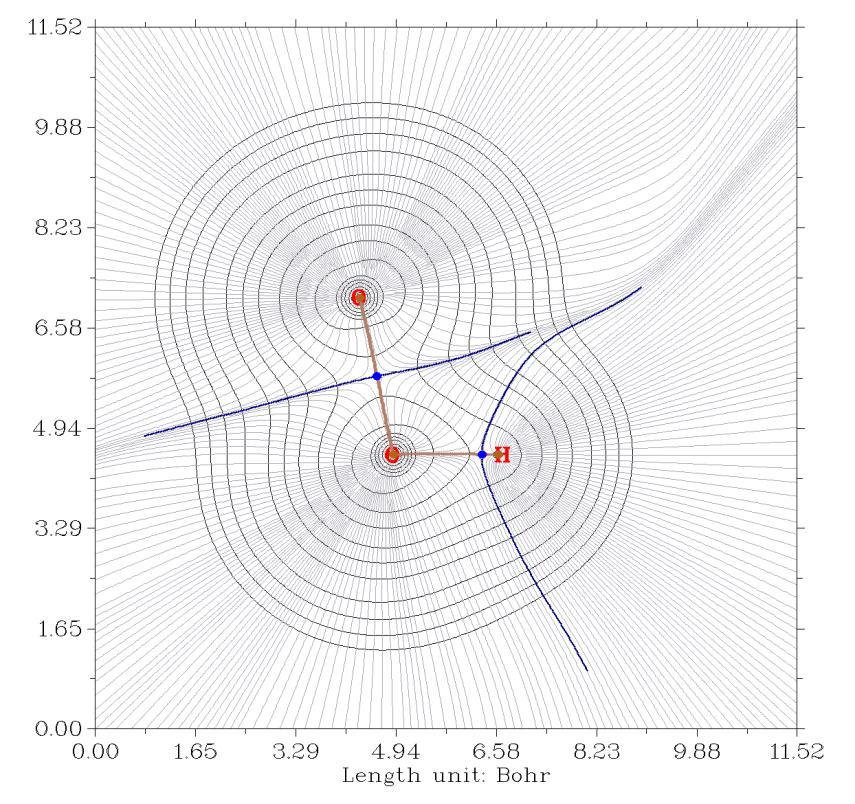
4.4.7 乙酰氯的电子密度形变图¶
电子密度形变图清楚地显示了分子形成过程中电子密度分布的变化，其定义为实际分子电子密度减去其所有组成原子在自由态时的电子密度。形变密度分析的示例可参见我的论文 Acta Phys. -Chim. Sin., 34, 503 (2018)。
由于实际化学体系中有如此多的原子，通过自定义操作（custom operation）功能绘制这种图形是一项繁重的工作。幸运的是，Multiwfn 提供了一个特殊选项，以高度自动化的方式实现这一点。启动 Multiwfn 并输入以下命令
Multiwfn 交互
- examples\CH3COCl.wfn 4 — 绘制平面图
- -2 — 告诉 Multiwfn 你要绘制形变图，然后 Multiwfn 会准备自由态原子的波函数
B3LYP/6-31G* // 用于通过 Gaussian 生成原子波函数文件的理论水平，与生成 CH3COCl.wfn 所用的水平相同
D:\study\g09w\g09.exe // Gaussian 可执行文件的路径（你也可以使用其它版本的 Gaussian）。如果你已在 settings.ini 的“gaupath”参数中设置了正确路径，则 Multiwfn 不会每次都要求你输入路径
现在 Multiwfn 开始调用 Gaussian 计算原子波函数，然后在内部对其进行转换和球平均化处理。这些临时波函数文件存放在当前目录下的“wfntmp”文件夹中，得到预期图形后可删除该文件夹。继续输入其余命令。
Multiwfn 交互
- 1 — 电子密度函数
- 2 — 等值线图 [按回车键（ENTER）使用默认格点设置] 1
- 0 — 以 Z=0 的 XY 平面作为酰氯所在的平面
然后形变图弹出：
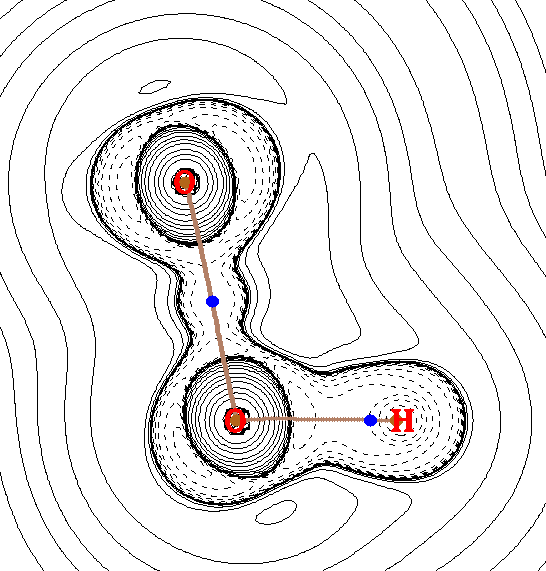
正如我们所预期的，电子密度向成键区域集中。我们还发现，氯原子周围的密度分布明显偏离球形，这一观察结果与杂化轨道理论一致，氯原子形成了一定程度的 sp3 杂化态。
你也可以通过选择相应的实空间函数来绘制其它函数的形变图，尽管并非所有函数都有意义。
如果你下次想避免重新计算原子波函数文件，可将“wfntmp”文件夹中不带数字后缀的 .wfn 文件（如“C .wfn”）复制到当前目录下的“atomwfn”文件夹中，如果 Multiwfn 发现“atomwfn”文件夹中已存在所有需要的原子波函数，则不会再调用 Gaussian 重新计算它们。
提示：你也可以使用“examples”目录下的 genatmwfn.pdb 在一次运行中生成特定基组下的所有原子波函数，请参阅 3.7.3 节。
“examples”目录下的“atomwfn”文件夹包含前四周期所有元素的原子波函数（6-31G*），你可直接将该文件夹复制到当前目录，此后在绘制形变图时将不再需要 Gaussian。
如果你的体系涉及比 Kr 更重的元素，你必须手动计算相应的原子 .wfn 文件并将其放入 "atomwfn" 文件夹。关于准备原子波函数文件的更多详细信息可参见 3.7.3 节。
4.4.8 绘制水四聚体相对于其单体的电子密度和 ELF 差值图¶
（difference map）¶
在本例中，我将说明如何为给定的实空间函数绘制体系与其组成
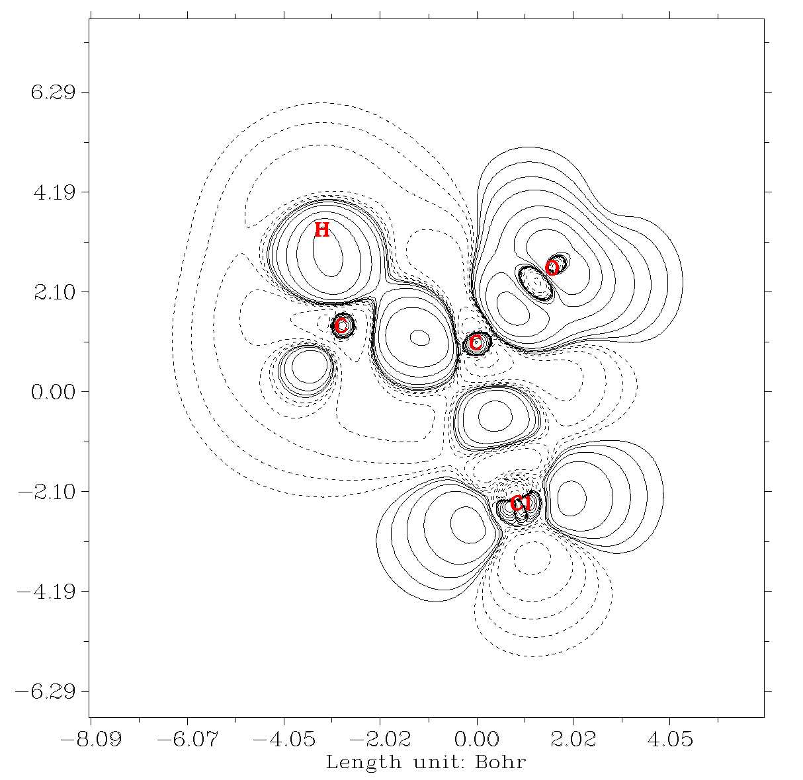
片段之间的差值图。将以电子密度和 ELF 作为所研究的函数。
examples\water_tetramer\wfn\complex.wfn 是优化后的水四聚体的波函数文件，而该文件夹中的 water1/2/3/4.wfn 是每个水单体的波函数文件。相应的 Gaussian 输入文件也提供在该文件夹中。注意，单体坐标直接取自复合物坐标，且所有文件均使用了 nosymm 关键词，以避免 Gaussian 在计算过程中自动重定向分子几何结构。（请记住，只有当所有片段的坐标与整个复合物的坐标完全一致时，密度差值图才有意义）
绘制电子密度差值图 首先，我们为复合物相对于全部四个单体绘制电子密度差值的平面图。启动 Multiwfn 并输入
Multiwfn 交互
- examples\water_tetramer\wfn\complex.wfn 4 — 绘制平面图
- 0 — 自定义操作（Custom operation）
- 4 — 将对最初载入的体系操作四个文件 -,examples\water_tetramer\wfn\water1.wfn -,examples\water_tetramer\wfn\water2.wfn -,examples\water_tetramer\wfn\water3.wfn -,examples\water_tetramer\wfn\water4.wfn
- 1 — 电子密度
- 2 — 等值线图 [按回车键（ENTER）使用默认格点设置]
- 4 — 由三个原子定义平面 7,10,1
图形会立即弹出。我们可以进一步改善绘图效果。关闭图形并输入
Multiwfn 交互
- 3 — 修改等值线设置
- 15 — 设置适合发表的线型和线宽
- 1 — 保存并返回
- 17 — 设置显示原子标签的距离阈值
- 0.2 — 0.2 Bohr
- y — 若原子与绘图平面的距离大于指定的 0.2 Bohr，则标签将以细体样式绘制
0 // 将图形保存为当前文件夹中的图像文件 所得图像文件应如下所示
在图中，红色实线和蓝色虚线分别对应四聚体形成过程中电子密度增加和减少的区域。
在 Multiwfn 中，你也可以很容易地通过主功能（main function）5 以等值面图的形式绘制密度差值，所得图形如下所示，等值面值为 0.003。如果你不知道如何实现，请参阅 4.5.5 节。
绘制 ELF 差值图 接下来，我们绘制 ELF 的颜色填充差值图。输入以下命令
Multiwfn 交互
- -5 — 返回主菜单（main menu）
- 4 — 绘制平面图
Multiwfn 交互
- 0 — 自定义操作（Custom operation）
- 4 — 将对最初载入的体系操作四个文件 -,examples\water_tetramer\wfn\water1.wfn -,examples\water_tetramer\wfn\water2.wfn -,examples\water_tetramer\wfn\water3.wfn -,examples\water_tetramer\wfn\water4.wfn
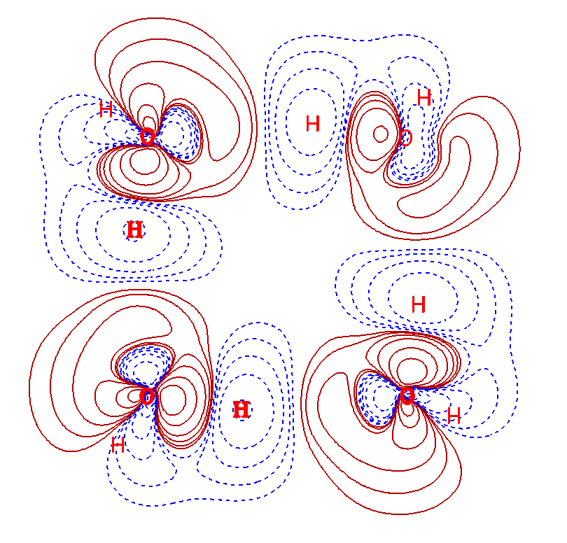
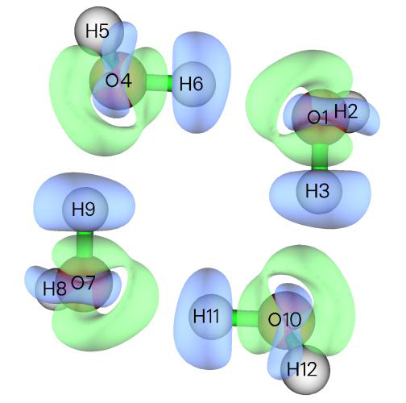
Multiwfn 交互
- 9 — ELF
- 1 — 颜色填充图 [按回车键（ENTER）]
- 4 — 由三个原子定义平面 7,10,1
屏幕上显示的图形目前很难看，因为默认的颜色标尺不适合当前情形。关闭图形并输入
Multiwfn 交互
- 1 — 设置颜色标尺的下限和上限 -1.5,0.1
- 4 — 关闭原子标签显示 4
蓝色标签
Multiwfn 交互
- -1 — 再次显示图形 你将看到
蓝色尤其是深蓝色区域表明相应区域的 ELF 有所降低。该图显示，在复合物形成过程中，分子间相互作用区域的电子定域性降低，这可归因于 Pauli 排斥效应的结果。
4.4.9 绘制卟啉的 LOL-π 图以揭示有利的电子¶
离域路径¶
众所周知的 ELF-π 是仅由 π 电子贡献的 ELF。类似地，LOL-π 可定义为定域轨道指示剂（LOL）的一种变体。相关知识见我的论文 Theor. Chem. Acc., 139, 25
(2020) DOI: 10.1007/s00214-019-2541-z。LOL-π 的特征与
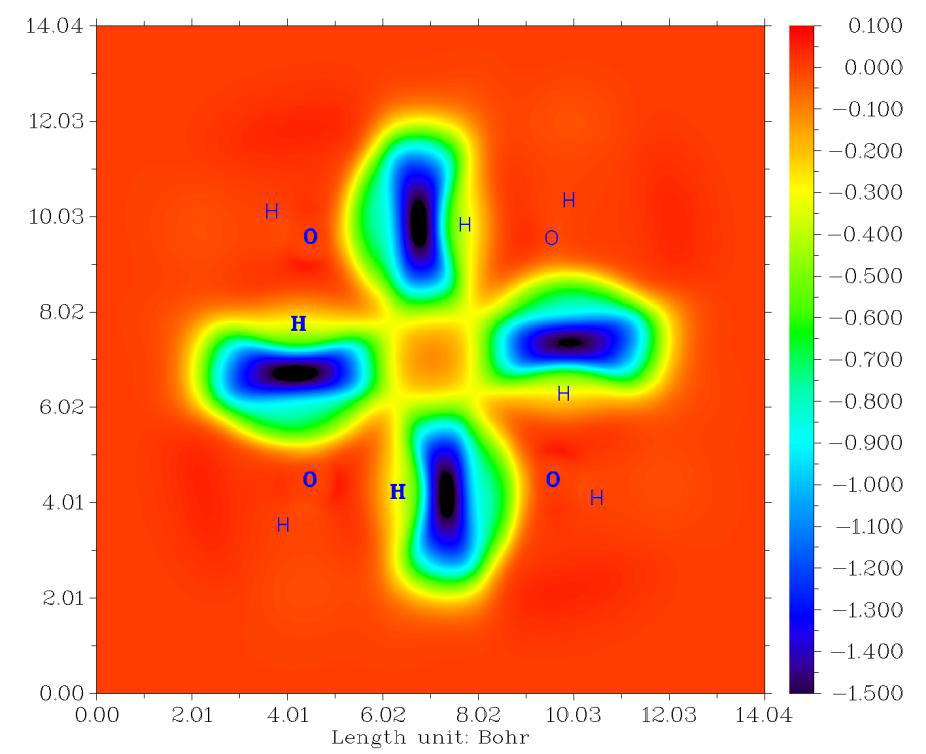
ELF-π 高度相似，但通常 LOL-π 的图形效果更好。在本节中，我将说明如何绘制卟啉上方 1.2 Bohr 处的颜色填充 LOL-π 平面图，你会发现该图对于理解优先电子离域路径非常有用，而这与分子芳香性密切相关。
绘制和分析 LOL 与 LOL-π 的唯一区别在于，对于后者，你应先将除 π 轨道外所有轨道的占据数设为零。如下所示，这可通过 Multiwfn 自动完成。
卟啉在 B3LYP/6-31G* 水平下的 .fch 文件可从 http://sobereva.com/multiwfn/extrafiles/porphyrin.rar 下载。启动 Multiwfn 并载入该 .fch 文件，然后输入以下命令：
100 // 其它功能（Other functions）
Multiwfn 交互
- 22 — 识别 π 轨道（Detect π orbitals）
- 0 — 对严格平面体系的离域轨道识别 π 轨道
- 2 — 将所有其它轨道的占据数设为零
- 0 — 返回主菜单（main menu）
- 4 — 绘制平面图 10
- LOL 1 — 颜色填充图 [按回车键（ENTER）]
Multiwfn 交互
- 绘制 YZ 平面 1.2 — X=1.2 Bohr 关闭图形，然后输入
- 1 — 设置颜色标尺的下限和上限 0,0.66
- 4 — 开启原子标签显示 7
设置显示原子标签的距离阈值
Multiwfn 交互
- 2 — 由于绘图平面与分子的距离为 1.2 Bohr，为使所有原子标签都显示在图形上，该阈值必须设为大于 1.2 Bohr 的值。这里我们设为 2.0 Bohr
y
Multiwfn 交互
- 8 — 开启化学键显示
- 14 — 棕色
- -1 — 重新绘制
现在你将看到下图
高 LOL-π 区域（红色或橙色区域）清楚地揭示了有利的离域路径。如果你绘制由垂直于分子平面的外磁场诱导的当前图形（例如使用 AICD 或 GIMIC 方法，详见我的幻灯片：http://sobereva.com/148），你会发现单向连续的诱导电流主要
形成于 LOL-π 函数所突显的有利离域路径上。
接下来，为了充分展示 Multiwfn 平面绘图功能的灵活性，我说明如何以上述明显不同的风格绘制该图，即用颜色填充的等值线间区域。
我们返回主菜单（main menu），然后输入
Multiwfn 交互
- 4 — 绘制平面图
- 10 — LOL 2
使用默认格点
Multiwfn 交互
- 0 — 设置扩展距离（extension distance）
- 1 — 1 Bohr（小于默认值，以减小分子周围的空白区域）
- 3 — 绘制 YZ 平面
- 1.2 — X=1.2 Bohr 关闭图形，然后输入
- 9 — 开启在当前等值线之间填充颜色
- 9 — 设置填充颜色的状态
- 2 — 设置填充的下限和上限 -0.2,0.52
- 4 — 切换颜色条显示
- 5 — 设置颜色条的标签间隔 0.1
- 3 — 设置颜色过渡（color transition）
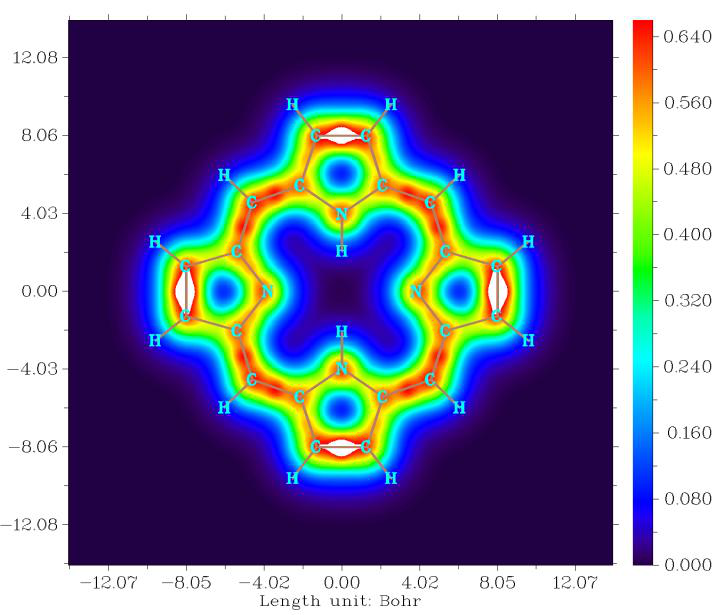
Multiwfn 交互
- 18 — Viridis
- 0 — 返回
- -8 — 将图形的长度单位改为 Å
- -2 — 设置 X 轴和 Y 轴的标签间隔 2,2
- 3 — 修改等值线设置
- 8 — 按等差数列生成等值线数值
- 0,0.07,15 — 生成 0.00、0.07、0.14 … 0.98 的等值线
- y — 删除已有的等值线
- 1 — 保存设置并返回
- 17 — 设置显示原子标签的距离阈值
- 2 — 最大距离为 2 Bohr y
- 8 — 开启化学键显示
- 14 — 棕色
- -3 — 修改其它绘图设置
- 10 — 设置导出图像文件的格式
- 7 — pdf 格式。强烈建议将这类图形导出为 .pdf 等矢量格式
- 0 — 返回
- 0 — 将图形保存为当前文件夹中的图像文件
现在你可以打开导出的 .pdf 文件，你将看到如下图所示。可以看到，线条看起来非常光滑，颜色也非常舒适！现在这张图与带等值线的颜色填充图不同，因为相邻两条等值线之间只有一种颜色。
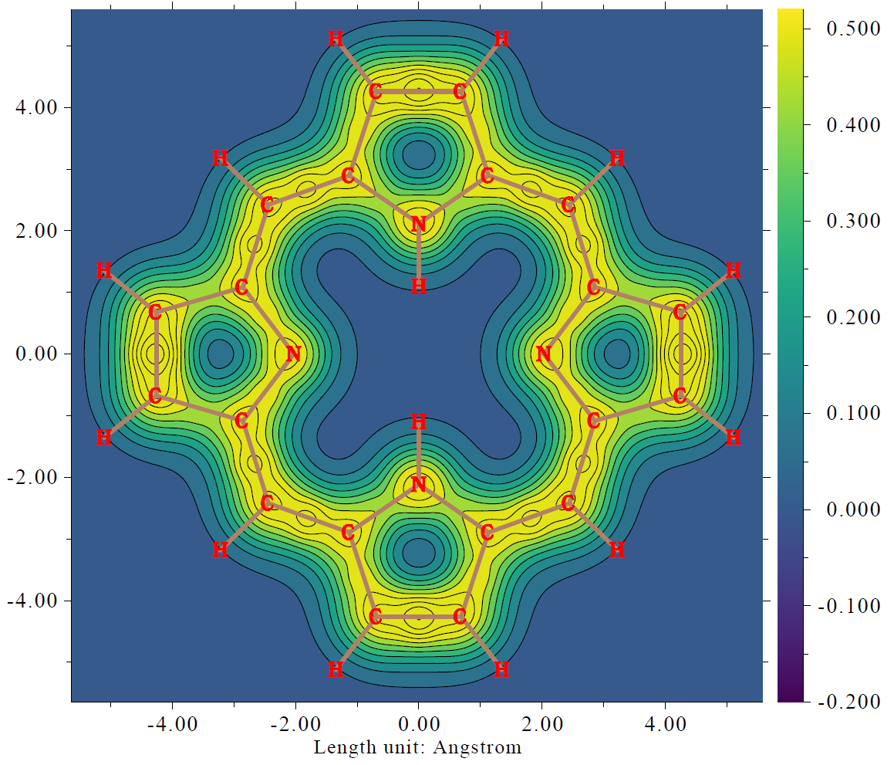
4.4.10 绘制静电势的梯度线和矢量场图以揭示 LiF 的电场¶
（potential to reveal electric field of LiF）¶
本节的主要目的是说明如何正确绘制有意义的梯度线图和矢量场图。
电场（F）定义为静电势（ESP）对坐标的一阶导数矢量（即梯度矢量）的负值；因此，若我们绘制 ESP 的梯度线或矢量场图，就能生动地展示电场（F）。在本节中，我将以离子化合物 LiF 为例。
Multiwfn 交互
- 梯度线图 启动 Multiwfn 并输入 examples\LiF.wfn — 在 B3LYP/6-31G* 水平下生成
- 4 — 绘制平面图 12
- ESP 6 — 梯度线图 [按回车键（ENTER）使用默认格点设置]
- 0 — 修改扩展距离（extension distance）
- 6 — 6 Bohr（大于默认值）
- 3 — YZ 平面 0
显示一条等值线以揭示范德华表面
Multiwfn 交互
- 10 — 在梯度线上显示箭头 现在你可以得到如下图所示的图形
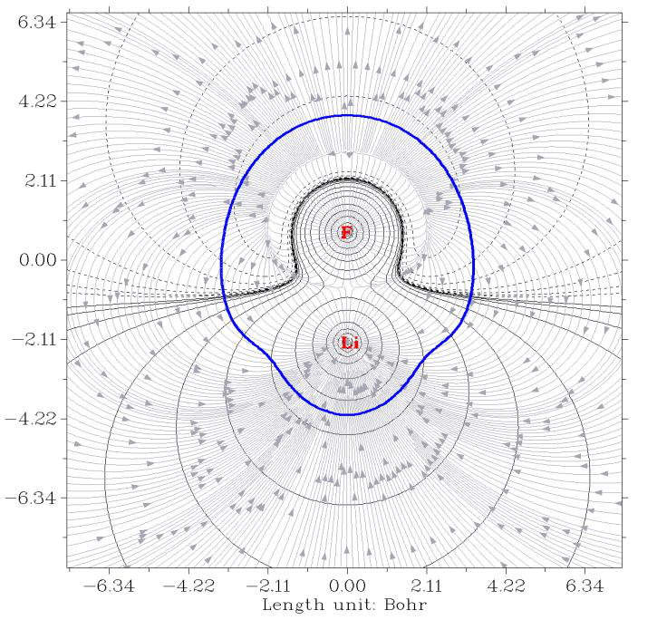
在上面的图中，灰色渐变线清晰地展示了各处的电场方向。注意，由于电场对应于静电势（ESP）的负梯度矢量，箭头实际上应该反向。
矢量场图（Vector field map） 接下来，我们绘制另一种风格的图来展示电场特征。输入以下命令：
Multiwfn 交互
- -5 — 返回主菜单（Return to main menu）
- 4 — 绘制平面图（Plot plane map）
- 12 — 静电势（ESP） 7
两个维度上的格点数（Number of grids in the two dimensions）
Multiwfn 交互
- 3 — YZ平面（YZ plane）
- 0 — X=0 关闭屏幕上显示的图形，然后输入
Multiwfn 交互
- 11 — 将颜色映射到箭头上（Map color to arrows）
- 10 — 设置用于缩放箭头的绝对值上限（Set upper limit of absolute value for scaling arrows） 0.05
- 15 — 显示一条等值线以揭示范德华表面（Show a contour line to reveal van der Waals surface）
- 13 — 反转梯度矢量，使箭头对应于电场方向(Invert gradient vectors, so that the arrows will correspond to direction of electric field)
- 1 — 关闭原子标签和参考点的显示（Disable showing atom labels and reference point）
- 1 — 开启原子标签和参考点的显示（Enable showing atom labels and reference point）
- 3 — 使用蓝色标签（Use blue label color） 现在重新绘制该图，你将看到
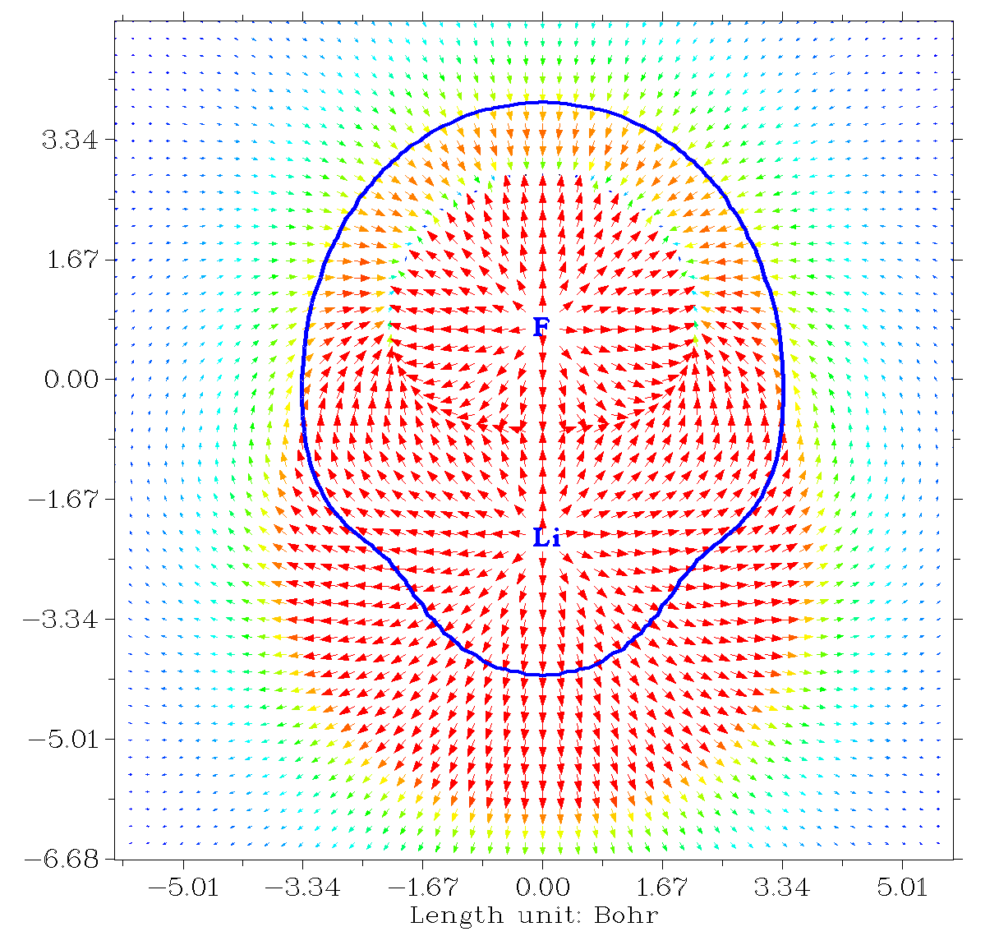
在这幅图中，箭头越红，对应位置处的电场强度越大。可以看到，电场从每个原子核发出，而在离两个原子核相对较远的区域，电场矢量的总体方向是从Li一侧指向F一侧，这是因为在此体系中Li和F分别带有明显的正负净电荷。你还可以发现，在图的顶部有一个半圆形状的区域，那里的电场强度很小或为零。这个区域实际上具有最负的ESP值，因此表现为分子电场的终点(事实上，围绕该区域的所有箭头都指向该区域)。
4.4.11 绘制Kr原子漂亮的4p轨道图¶
本例说明如何绘制非常清晰漂亮的填色等值线图来展示Kr原子的4p原子轨道。波函数文件Kr.wfn已在“examples\atomwfn”文件夹中提供，它是由Gaussian在B3LYP/6-31G*水平下做单点任务生成的。
启动Multiwfn并输入以下命令 examples\atomwfn\Kr.wfn
Multiwfn 交互
- 4 — 在平面内输出并绘制特定性质（Output and plot specific property in a plane）
- 4 — 轨道波函数值（Value of orbital wavefunction）
- 17 — 对应于4pz的轨道(你可先用主功能0直观地找到你感兴趣的轨道)(The orbital corresponding to 4pz)
Multiwfn 交互
- 2 — 等值线图（Contour line map）
- [按回车键（Press ENTER button）] — 使用默认格点数（Use default number of grids）
- 0 — 修改扩展距离，使绘图区域略大于默认值（Modify extension distance to make plotting area slightly larger than default）
- 5 — 5 Bohr
- 2 — XZ平面（XZ plane）
- 0 — Y=0
现在点击鼠标右键关闭图形，然后输入以下命令以改善图形效果
Multiwfn 交互
- 9 — 允许为等值线填充颜色（Enable filling colors for contour lines）
- 9 — 设置等值线之间填充颜色的状态（Set status of filling colors between the contour lines）
- 3 — 设置颜色过渡（Set color transition）
- 8 — 蓝-白-红（Blue-White-Red）
- 0 — 返回（Return）
- 3 — 更改等值线设置（Change setting of contour lines）
- 5 — 使用适用于特殊用途的内置等值线值（Use built-in contour values suitable for special purpose）
Multiwfn 交互
- 3 — 适用于绘制轨道波函数(即±0.01*2(i-1)，i = 1-28)(Suitable for plotting orbital wavefunction)
- 1 — 保存设置并返回（Save setting and return） 现在你可以用选项-1来可视化当前图形。在本例中我们将把图形保存为.pdf文件。你可以通过settings.ini中的“graphformat”设置默认文件格式，不过这里我们临时把格式改为.pdf，因此输入
Multiwfn 交互
- -3 — 更改其它绘图设置（Change other plotting settings）
- 10 — 设置导出图像文件的格式（Set format of exporting image file）
- 7 — pdf
0 // 返回（Return） 最后，选择选项0保存图形文件。打开该文件后你将看到
如你所见，图形效果非常完美，十分清晰漂亮！
4.4.12 在等值线上显示函数的极值点¶
本例说明如何在平面图中展示实空间函数在特定等值（isovalue）的等值线上的极值位置。这里以苯酚为例，我们将在分子平面内绘制静电势(electrostatic potential，ESP)在ρ = 0.001 a.u.等值线上的极值。
Multiwfn 交互
- 启动Multiwfn并输入 examples\phenol.wfn 4 — 绘制平面图（Plot plane map）
- 1 — 电子密度（Electron density）
- 2 — 等值线图（Contour line map） [按回车键（Press ENTER button）]
XY平面（XY plane）
Multiwfn 交互
- 0 — Z=0 现在关闭屏幕上显示的图，然后输入
- 19 — 允许在等值线上显示函数的极值（Enable showing extrema of a function on a contour line）
- 0.001 — 当前函数(即电子密度)的等值（Isovalue of present function）
- 12 — 静电势（ESP） -1
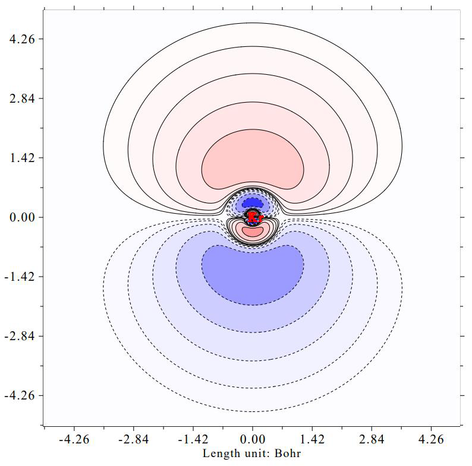